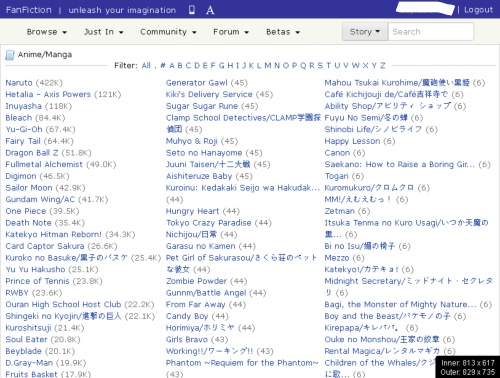
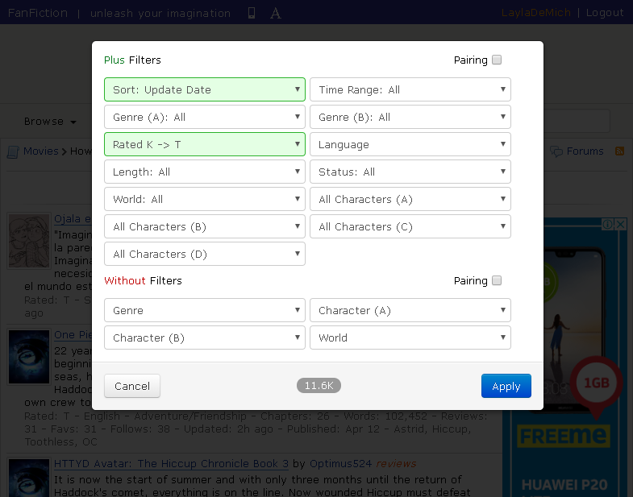

1. Motivation
2. Technical Requirements
2.1 Website
You can go to the website HERE
There are three forms of this website. Mobile, desktop and app. I will analyse the desktop version.
Layout and Structure
The desktop version is not designed to be responsive to changing width sizes of the viewport which kind of hinders you if you want to make the browser window smaller.
The style is very simple and uses dark and light blue accents to differentiate between containers.
Everything looks well organised and divided into categories of either 'fanfiction' or 'crossovers'. The genre and story links are separated into columns.
I can guess that the news feed articles and Tweets are displayed with JSON using an API. No images are used to decorate the site that I know of except for your profile picture and story cover art.
The Alpha 'Α' character at the top allows you to open a panel to change the font family of the site's text.
If you navigate to THIS story library for example, you can see that the story articles consist of the name, cover art, the aurthor, a link to the reviews, a description, and filter information such as rating, words, genre, etc.
These articles are structured underneath each other and display plus/minus twenty five per page.
Why is this website great?
When you watch a tv-show or read a book, have you ever wished that the characters did anything different or that the plot was different?
Fanfiction.net has an enormous database of fanfiction written by people who want to explore that ‘what if’.
It’s free to use and accessible to nearly anyone with a computer.
The community has a good mix of novice and professional writers. You can determine how much someone is popular based on the number of follows, reviews and favourites they have on their stories and profile.
Is there room for improvement?
Unfortunately, yes.
The design is too simple and lacking.
If you compare it to a platform like 'Wattpad', you can see that more effort could have been put into making it more visually appealing.
Most languages are available, but the language of the story written depends heavily on the author. A translator would be useful, but also complicated as the accuracy may not be one hundred percent.
Is navigation easy to use?
Fairly easy and understandable as everything is organised into categories upon sub-categories and manageable.
Is information easy to find?
Yes. It has a search input and detailed filter.
When searching for a story, you can traverse through categories ranging from movies, anime/manga, books, cartoons, etc.
What parts of this site are fun and what parts are frustrating?
It’s fun posting your own fanfics, participating in forums and finding that story that is gold amongst the coal. My favorite part, is making friends that you can betaread for or collaborate with.
The frustrating part is that sometimes authors abandon their stories and leave it incomplete. Differences in opinion can also start fandom wars in the forums.
2.2 Storyboard
3. Digital Design
3.1 The Internet
3.2 Websites
3.3 Influencers
Dean DeBlois and Chris Sanders
These guys were the screenwriters and directors who made my favourite animation movie franchise, 'How to Train Your Dragon'.
Mark Crilley and EdenDaphne
3.4 Original Art